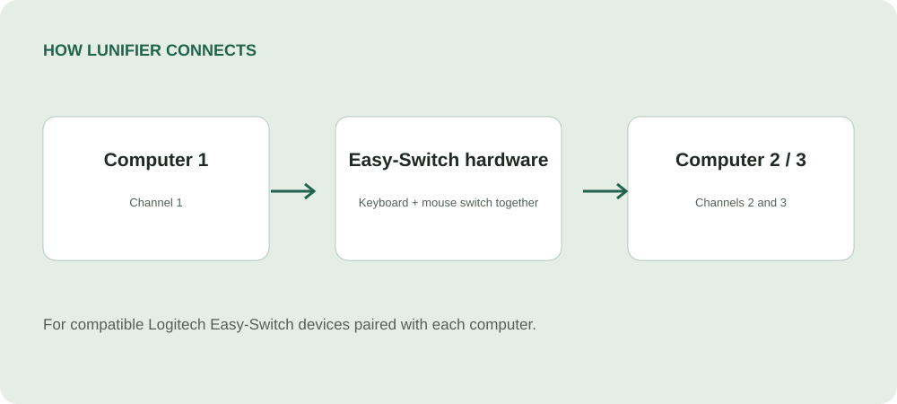

Choose your edges
Map the left, right, top, and bottom edges to Easy-Switch channels 1, 2, or 3.
Windows + Linux · Logitech Easy-Switch
Move your Logitech keyboard and mouse between computers by touching a screen edge. Your Easy-Switch devices change hardware channels together, without needing a shared Wi-Fi or LAN.
For compatible Logitech Easy-Switch devices paired with each computer.

Map the left, right, top, and bottom edges to Easy-Switch channels 1, 2, or 3.
Use screen edges, global hotkeys, or the tray menu. Tune dwell and cooldown to suit your desk.
Hardware switching works independently on each host. Optional Bluetooth peer features add cursor alignment and text clipboard sync.
Get started
Windows 11 or a supported Linux desktop (the native Linux UI targets Ubuntu 24.04+) for each host, compatible Logitech Easy-Switch peripherals, and Bluetooth, Unifying, or Logi Bolt connections supported by your devices. Pair the devices with every host before configuring Lunifier.
Hardware support depends on the device’s HID++ Easy-Switch features. Bluetooth peer features are optional and off by default. Lunifier is an independent project, unaffiliated with Logitech.
Inside the app

How it works

Packages & updates
Download a Debian package from Releases, or use the APT repository for updates:
curl -fsSL https://silviuk.github.io/Lunifier/install.sh | sudo bashThis command downloads and runs the installer with administrator privileges. Read install.sh first. Package metadata and existing downloads remain available at this URL.
Made by Silviu Vlasceanu
Help keep Lunifier moving forward with a tip, a bug report, or a contribution.